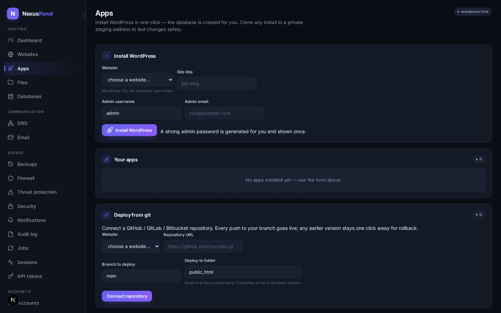
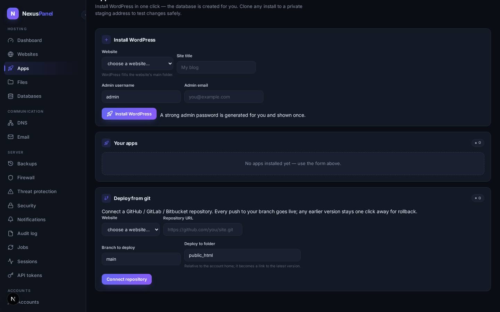

Apps & git deploys
Two ways to put a site online without touching a terminal. The app installer puts WordPress on any of your websites in one click — the database is created for you, a strong admin password is generated for you, and a staging copy is one click away for safe experiments. Deploy from git publishes a repository on every push, keeps every earlier version, and restores any of them with one click.

One-click WordPress live in the panel
Pick a website, give the site a title and an admin email, and press Install WordPress. The panel creates a fresh database for the install automatically (respecting your package's database quota), downloads WordPress, writes the configuration file locked to owner-only permissions, and generates a strong admin password — shown once in a green box. Save it when you see it; the panel never stores it, so nobody can read it out of the database later.
The whole install runs as your own hosting user, never as root — files that WordPress creates (uploads, plugins, themes) belong to you, which is exactly why future one-click updates keep working. Installs and updates appear in the job center like every other long-running piece of work.
For anything the buttons don't cover, the panel keeps a small, safe set of WP-CLI maintenance commands reachable per install (cache flush, rewrites, user and plugin listing) — deliberately not a general shell.
Staging copy — experiment safely live in the panel
Staging copy on any installed app clones the whole site —
files and database — to a private address like
stg1a2b.yoursite.com. The clone points at its own fresh
database and its internal links are rewritten to the staging address,
so it is completely isolated from your live site: try that plugin
update, break it, and the live site never notices. The live install's
configuration file is never touched by the clone.

Deploy from git live in the panel
Connect a GitHub, GitLab or Bitbucket repository, choose the branch, and pick the folder it should serve. The panel gives you a webhook address and a secret (shown once — paste it into your repository's webhook settings). From then on, every push to that branch deploys; pushes to other branches are politely ignored, and the signature on every delivery is verified before anything happens.
Each deploy lands in its own versioned folder and the site is switched over atomically — visitors never see a half-deployed tree. The History button lists every version with its commit; the currently live one is badged live, and Restore this version rolls back in one click. Old versions are kept (nothing is deleted by deploys), so a bad push is a thirty-second fix, not an incident.
What the panel does not do (honest list)
- Deploy logs show the clone and checkout output — there is no build-step runner (npm, composer) in v1.0; build your artifacts before pushing.
- Promoting a staging copy back to live is not one-click yet — copy your changed files and data with the files/database tools, or tell us this workflow matters to you.
- The installer ships WordPress first; other apps (Joomla, Laravel, …) arrive with the extension SDK.
- Deploy history lives on the node in the releases folder; pruning old releases is a deliberate, separate action — not automatic.